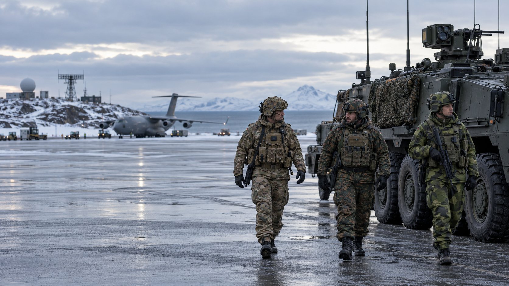

Access
Can personnel, equipment and aircraft enter, transit or operate under agreed national procedures?
Alliance Reliability · Access, Basing & Overflight
Alliance commitments are more than budgets and communiqués. In a crisis, they are access: airfields, ports, overflight, logistics, legal permission and political will.

Why this page exists
In his June 2026 address, Pete Hegseth said some Allies had not granted the United States requested predictable access involving bases, ports or overflight for operations against Iran. He said this forced the United States to move capabilities elsewhere.
This page does not assume the accusation is the full story. It asks what public information can show about the gap between formal alliance commitments and operational cooperation in a specific crisis.
Can personnel, equipment and aircraft enter, transit or operate under agreed national procedures?
Which facilities can host aircraft, ships, stockpiles, maintenance and sustainment—and under which political and legal limits?
Can aircraft transit sovereign airspace, on what notice and for which kind of operation?
The necessary distinction
NATO’s mutual-defence obligation is triggered by an armed attack meeting treaty conditions. A request for support in a separate U.S. operation can involve different national legal processes, parliamentary oversight, policy objections and bilateral agreements. Those facts may be politically frustrating, but they are not identical to a country refusing to honour Article 5.
Source context: NATO on Article 5 and national procedures.
Only public evidence: force contributions, exercises, host-nation arrangements, parliamentary rules, stated policy, diplomatic decisions and published legal constraints. Every page will mark content as documented fact, government claim or analytical inference.